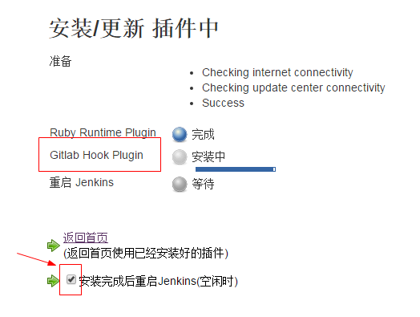
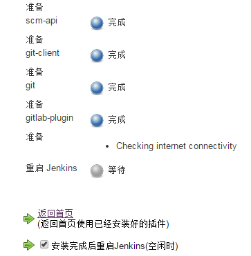
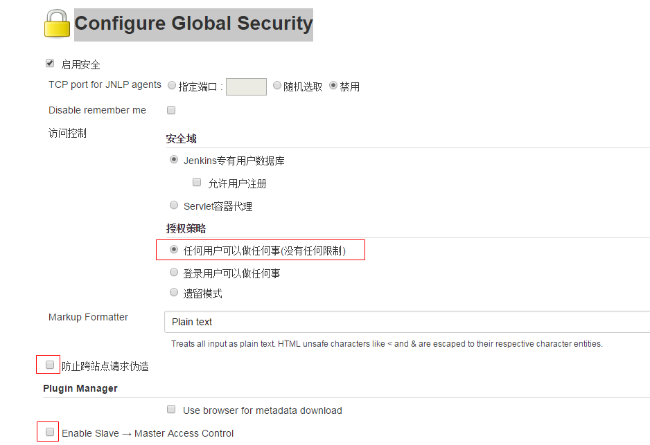
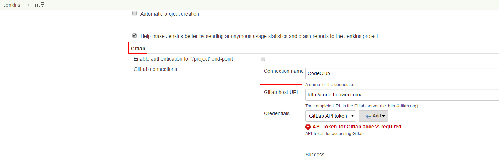
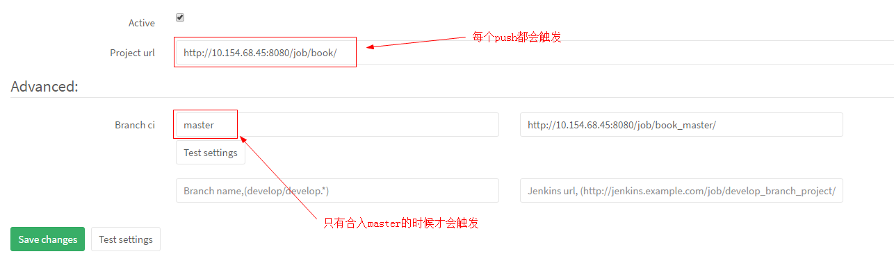
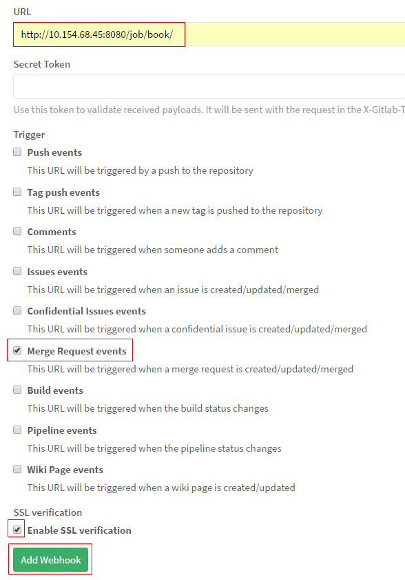
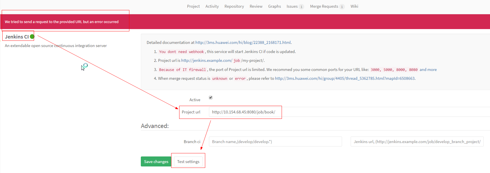

第一种使用内源方式：安装Jenkins
启动关闭Jenkins
查看Jenkins状态
service jenkins status
启动Jenkins:
service jenkins start
关闭Jenkins:
service jenkins stop
配置文件地址为：/etc/default/jenkins
运行日志：/var/log/jenkins/jenkins.log
访问Dashboard
默认端口是8080，ip:8080即可访问。
jenkins plugin
系统设置 -> 管理插件 -> 可选插件
git-client.hpi （git.hpi 依赖于它）
scm-api.hpi （git.hpi 依赖于它）
git.hpi （使Jenkins支持git ）
gitlab-plugin.hpi （ 使Jenkins支持gitlab自定义CI的功能 ）

【推荐】第二种使用打包文件方式：安装Jenkins
解压，把里面的jenkins.war包传到服务器
运行 java -jar jenkins.war
CI就建好了，通过 http://ip:8080/ 访问
也可以自定义端口号
java -jar jenkins.war --httpPort=9191
- 安装插件（有依赖顺序） 
为Book工程增加Jenkins自动部署
1. Jenkins配置【若使用第二种方式安装Jenkins，此步忽略】
- 系统设置 -> Configure Global Security
jenkens报错：403 no valid crumb was included in the request
解决：禁用防止CSRF
 
2. Jenkins服务器和CodeClub建立SSH认证
http://3ms.huawei.com/hi/blog/22388_2168171.html
3. Jenkins新建job
rsync -av $WORKSPACE/ /pkg_repo/book
cd /pkg_repo/book
/usr/bin/gitbook install
/usr/bin/gitbook build
4. 配置Jenkins CI

5. 配置webhook

巨大的坑
1. Jenkins的job执行shell，卡在了gitbook命令，任务超时
原来Jenkins是使用jenkins用户启动的，通过切换到jenkins用户执行gitbook命令，是卡在不动了。
解决：将122行的$JENKINS_USER改为root
122 # $SU -l $JENKINS_USER --shell=/bin/bash -c "$DAEMON $DAEMON_ARGS -- $JAVA $JAVA_ARGS -jar $JENKINS_WAR $JENKINS_ARGS" || return 2
123 $SU -l root --shell=/bin/bash -c "$DAEMON $DAEMON_ARGS -- $JAVA $JAVA_ARGS -jar $JENKINS_WAR $JENKINS_ARGS" || return 2
2. codeclub触发Jenkins的job失败

Jenkins插件gitlab-plugin 1.4.0出现了test失败，需要用旧的版本如1.1.17
3. 查询资料优先使用3ms
其他知识
Jenkins CI和webhook的区别
Jenkins CI只支持push events触发构建，webhook还可以支持merge request events触发构建；
但是只有Jenkins CI触发构建能返回构建状态，webhook不会返回
如何在Ubuntu下彻底并安全的卸载软件？
使用内源安装了Jenkins，完整的卸载，使用第二种方式安装Jenkins。
apt-get remove --purge jenkins
apt-get autoremov
或者
aptitude purge jenkins
aptitude remove pkgname #删除包
aptitude purge pkgname #删除包及其配置文件